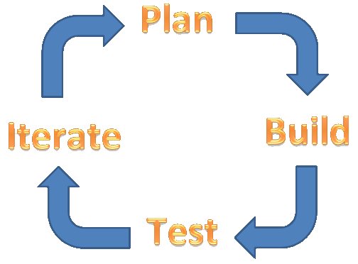
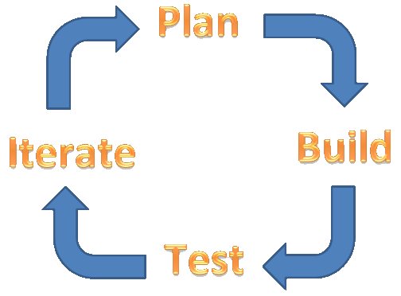

Software QA

"A Software Quality Assurance person's main responsibility is to examine and measure the current software development process and find ways to improve it with a goal of preventing bugs."
—Ron Patton

"A Software Quality Assurance person's main responsibility is to examine and measure the current software development process and find ways to improve it with a goal of preventing bugs."